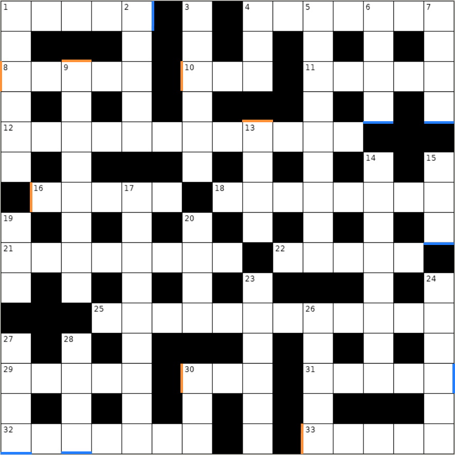

Across
- 4. The one millionth age of one of three furies
- 11. Incomplete X-rated gesture gets you close to finishing, but not quite
- 12. Encodes stuff remade by a Foley artist's work
- 18. Grow and prosper, like something that rises by itself?
- 21. Removing and taking off top while throwing up and drinking some tea
- 22. What you might pay to drive to an island
- 25. Full cover of song that might be of the heart?
- 29. Sounds like defeat is free
- 32. Allow some repetition in the French
Down
- 1. Smallest compass point has iron heading
- 2. Did a bone scan without what marks the spot while spread out like sunbeams
- 3. Semitone of flutist never to be repeated again?
- 4. Anime cuteness more expressed without adult rating!
- 5. Rage madly before insult by relative
- 14. Paid lipo operation while having double vision
- 17. Shy Guy's kart flanked on both sides by two kart bumpers after getting in
- 19. Punch boy before a hug and a kiss
- 20. Some Karenina!?
- 23. It's a must to unsharpen, say, a pointed object
- 24. Dethorn, mix, and remove head of nightshade - like a chili pepper, for example
- 26. Assistance in riding a horse left to gallop losing every round weaving in and out of Europe
- 30. The very first girl day
Portals
- Experiment with theatrics, right to the heart of key artistic principle
- It could be lead east, then north, then east, after a plot
- Method of cooking meat products results in burn wound at the emergency room, for example
- Movies about emotions engulfing one man suffering loss
- No need to fret! Down to try shuffling, after making shirt red
- Oh goodness! Around Grand, he was like one who sat on a wall and had a big fall
- The plan is to down drink filled with some rum